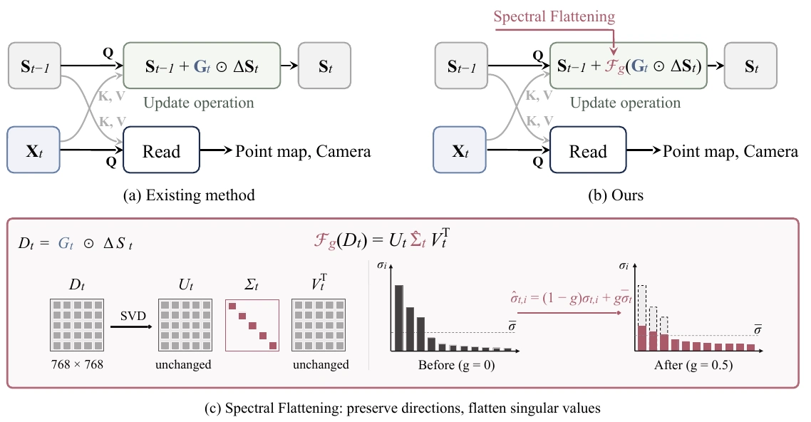

Analyze the write spectrum
A few dominant directions consolidate recurring information, while weaker directions carry observation-specific content.
TL;DR: Rebalance state writes across spectral directions to better absorb new observations—without retraining.
视频暂时无法播放
Explore the reconstruction from any angle. Both views move together.
500 input frames · Point clouds downsampled for interactive viewing
Streaming 3D reconstruction compresses long histories into a fixed-size state, while consecutive frames contribute little new content: only a small fraction of each frame’s pixels are observed for the first time. On 7-Scenes, first-observed regions have 1.5× the reconstruction error of repeatedly observed regions. SVD analysis of CUT3R shows that the top 16 write directions carry 81–85% of update energy and align with historical features. Repetition controls support this reading: repeating the same image shrinks the tail share sharply, whereas a dissimilar frame more than doubles the total write norm yet barely lowers the head share. These controls indicate that the head directions mainly consolidate recurring information, whereas middle and tail directions encode observation-specific content but receive little energy. We propose Spec3R, a training-free Spectral Rebalancing method whose spectral flattening operator preserves update directions while moving singular values toward their mean after the existing gate; the parameter g controls the flattening strength. For CUT3R and TTT3R, adaptive rebalancing reduces 7-Scenes reconstruction error by up to 15% and 16%, and TUM ATE by up to 61% and 56%, respectively, and improves video-depth accuracy. An efficient approximation accelerates the SVD-based operation at inference time.
Preserve update directions. Rebalance spectral magnitudes.

A few dominant directions consolidate recurring information, while weaker directions carry observation-specific content.
Spectral flattening adjusts singular-value magnitudes after the existing gate, preserving update directions.
A causal controller uses adjacent-frame DINOv2 patch-feature similarity to set the rebalancing strength.